Design
Beyond UX, my creative practice is grounded in visual storytelling and graphic experimentation.
This collection explores typography, branding, and conceptual art as ways to translate complex ideas into striking, minimalist visuals.
It's also a space for me to play with composition and form beyond traditional product cycles.
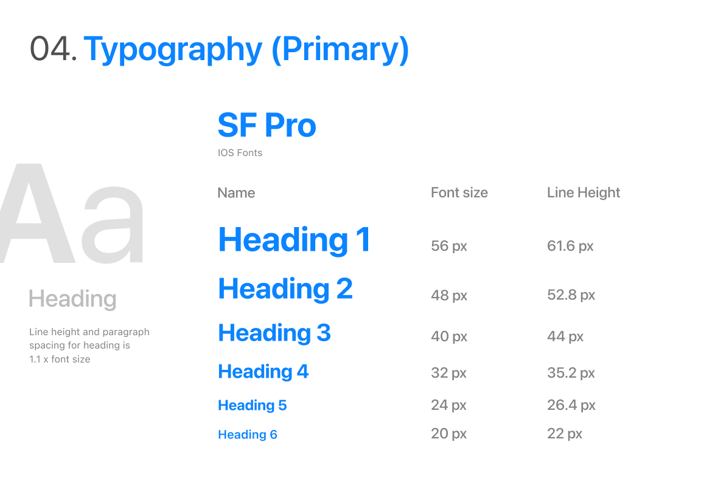
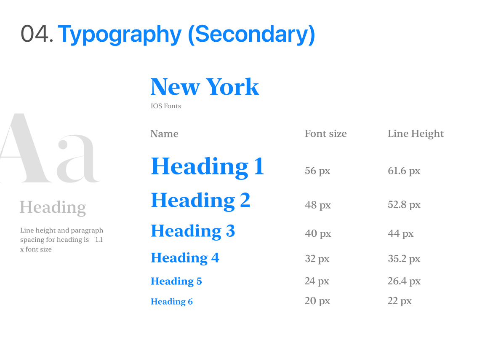
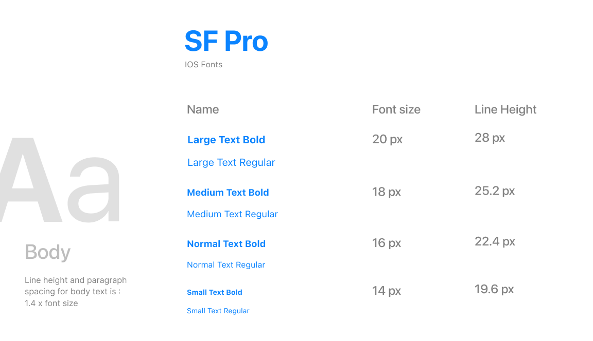
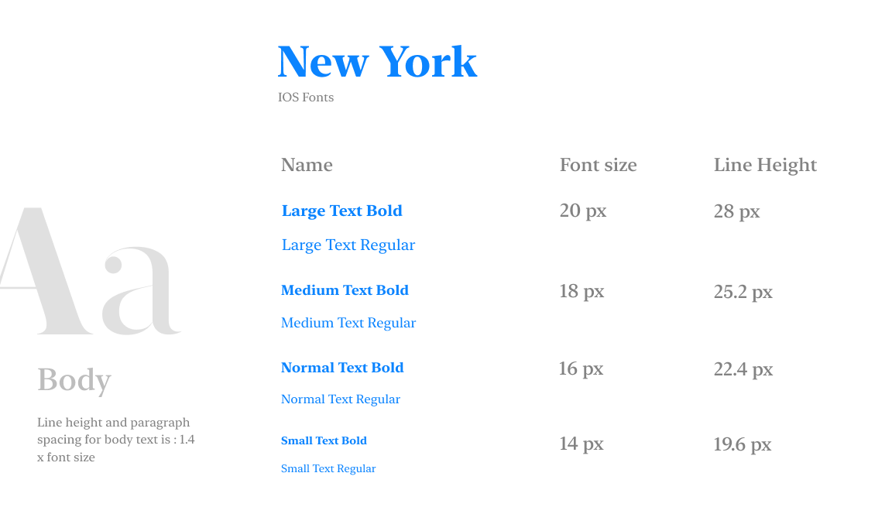
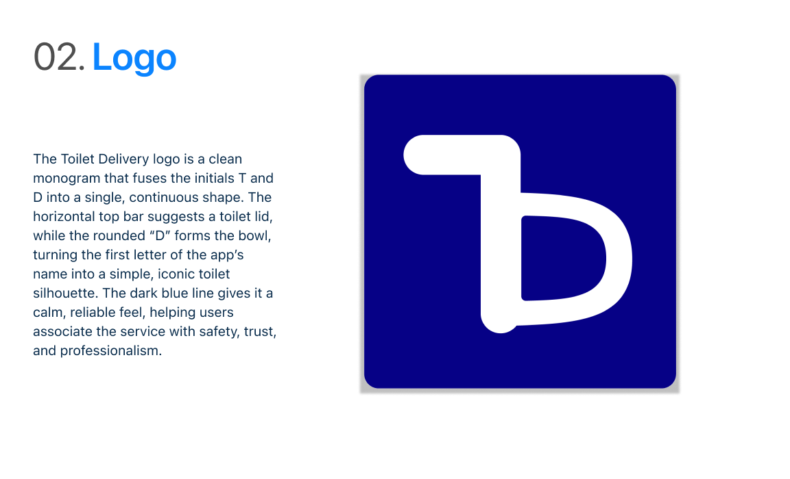
Photography
Photography is how I practice looking.
By documenting everyday moments, textures, and environments, I explore framing, rhythm, and atmosphere.
These skills that continue to shape how I approach visual storytelling and interaction design.
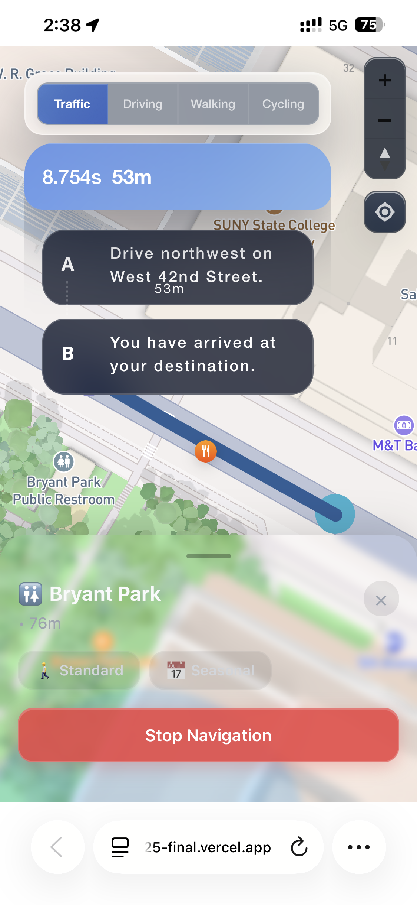
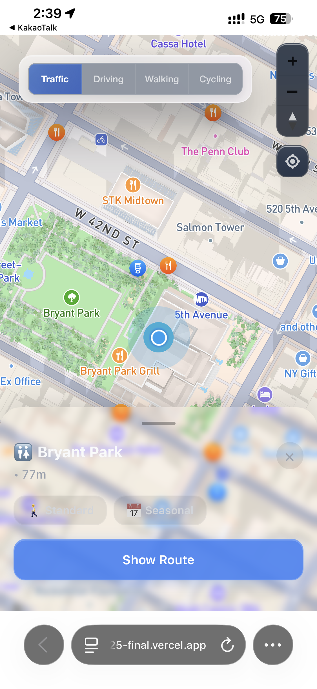
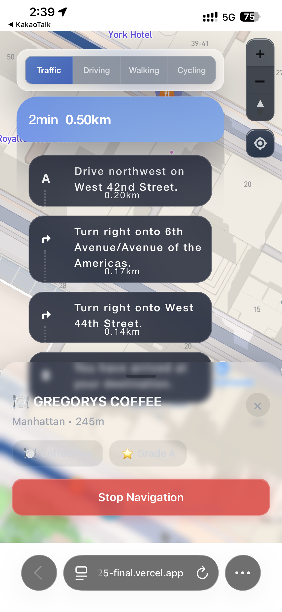
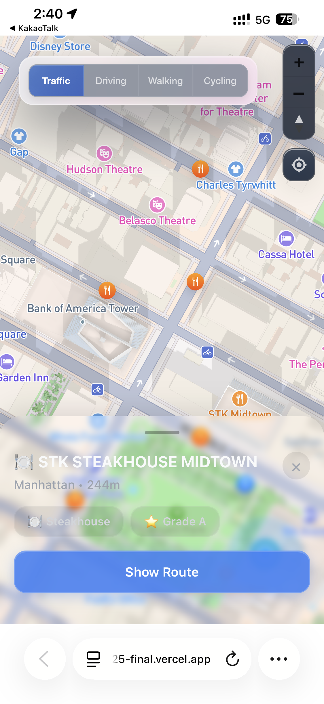
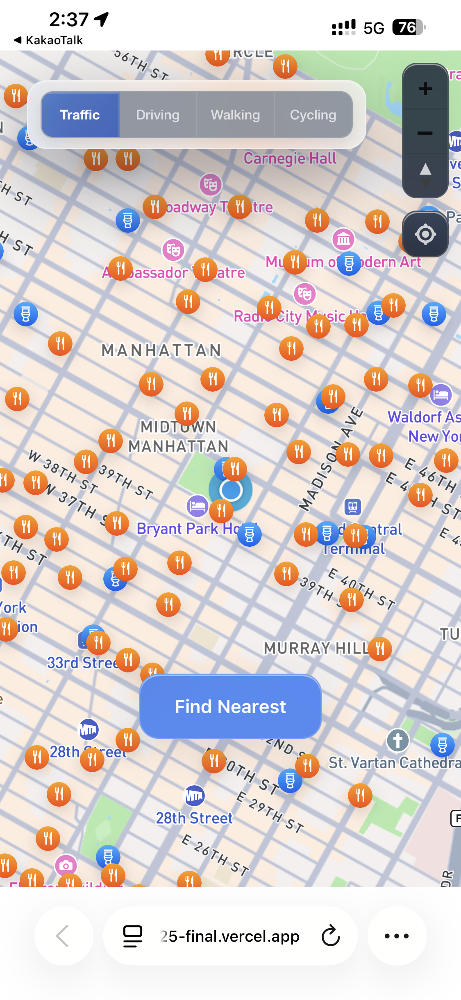
+ More
This is my creative laboratory :)
A place for play, exploration, and unfinished thoughts.
This is also where everything started.
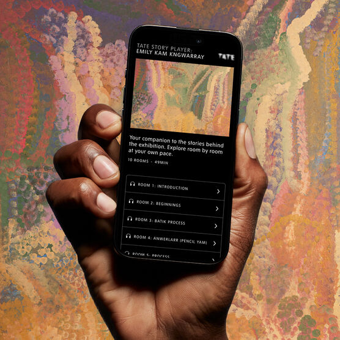
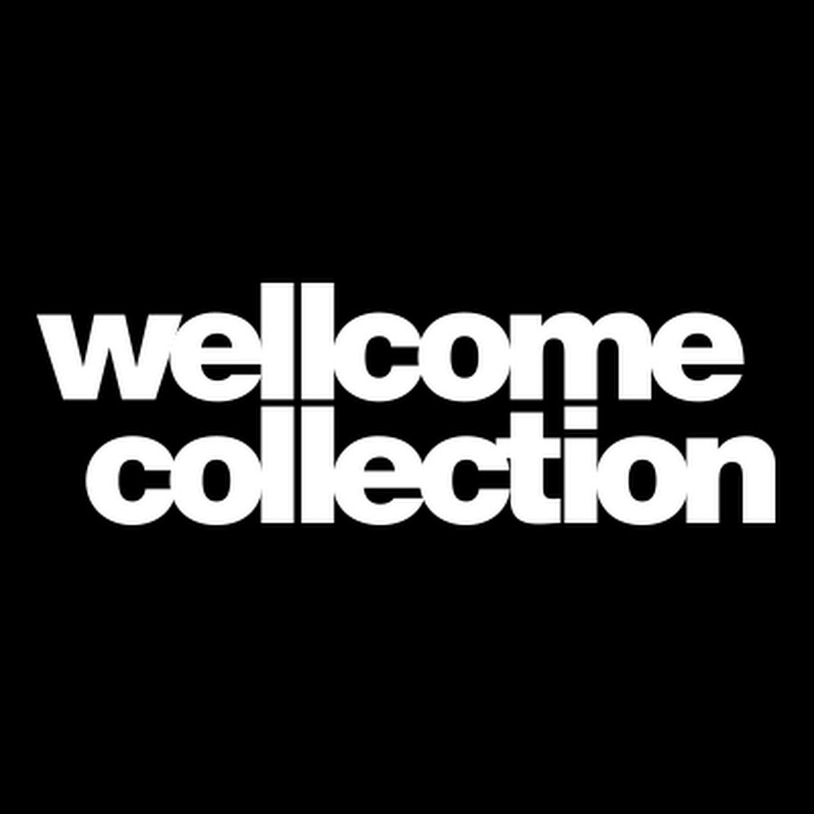